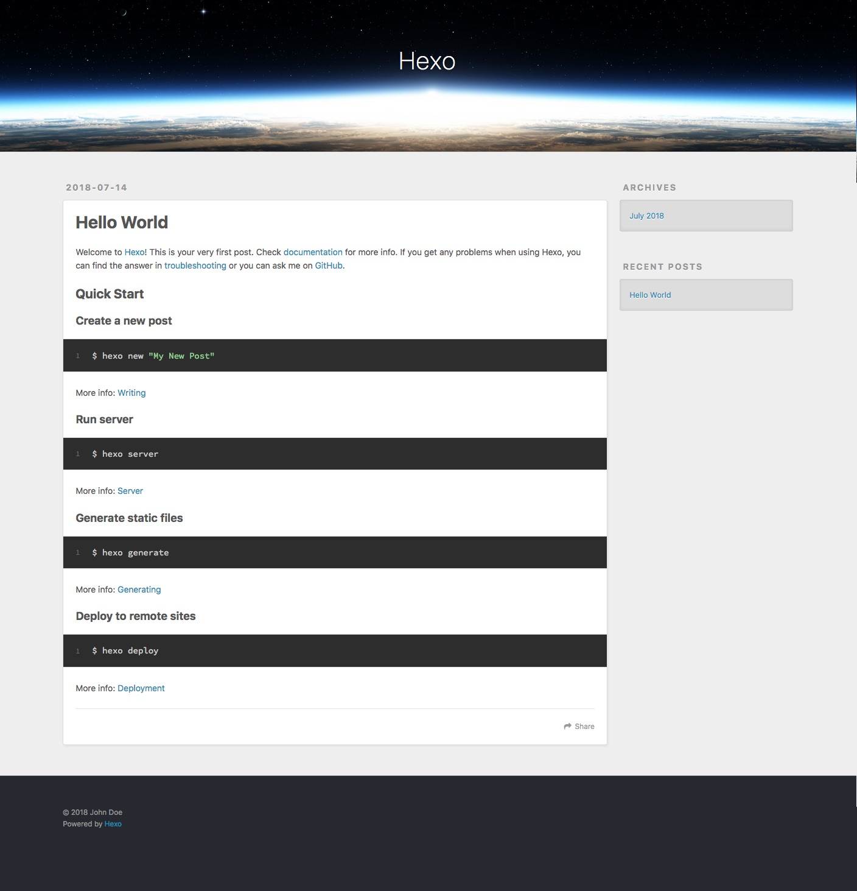
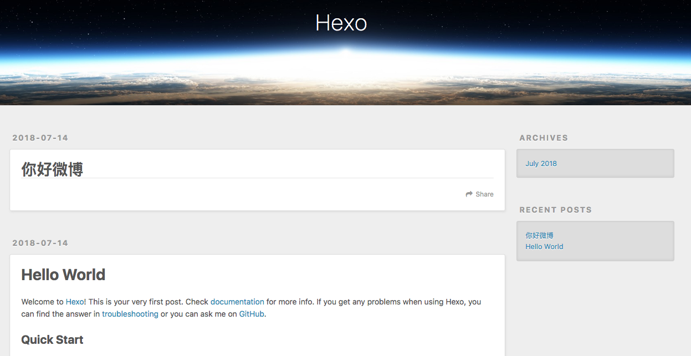
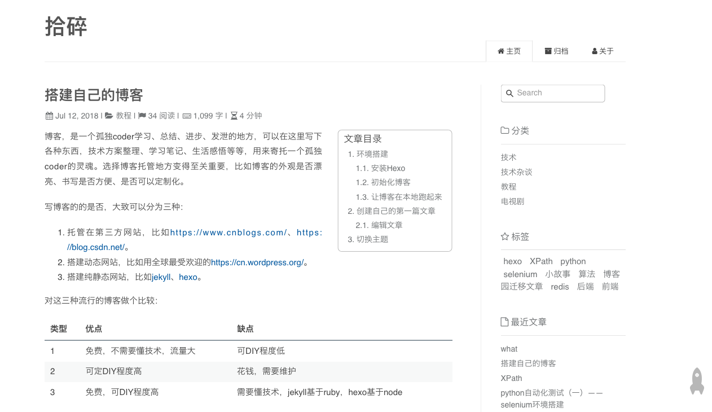
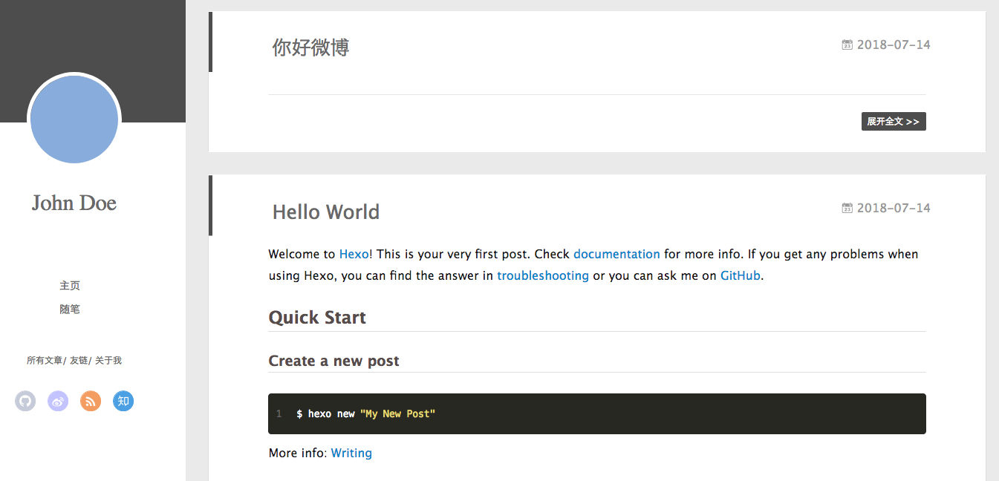

搭建自己的博客
博客，是一个孤独coder学习、总结、进步、发泄的地方，可以在这里写下各种东西，技术方案整理、学习笔记、生活感悟等等，用来寄托一个孤独coder的灵魂。选择博客托管地方变得至关重要，比如博客的外观是否漂亮、书写是否方便、是否可以定制化。
写博客的的是否，大致可以分为三种：
- 托管在第三方网站，比如https://www.cnblogs.com/、https://blog.csdn.net/。
- 搭建动态网站，比如用全球最受欢迎的https://cn.wordpress.org/。
- 搭建纯静态网站，比如jekyll、hexo。
对这三种流行的博客做个比较：
| 类型 | 优点 | 缺点 |
|---|---|---|
| 1 | 免费，不需要懂技术，流量大 | 可DIY程度低 |
| 2 | 可定DIY程度高 | 花钱，需要维护 |
| 3 | 免费，可DIY程度高 | 需要懂技术，jekyll基于ruby，hexo基于node |
作为我个人，我更喜欢第三种的hexo，因为他是最新的，基于js开发的，可以实时本地预览，相对于ruby，对js更熟悉一点儿，修改底层的时候更容易，我相信大家跟我一样。
环境搭建
这里是官方Hexo文档，Hexo依赖Node.js、Git，首先安装最新版的Node.js和Git，有疑惑的的自行百度，很简单的。Node.js安装之后，npm也会安装好，他是Node.js的包管理工具。安装完成之后分别运行下面命令，如果都有输出版本相关信息，并没有报错，证明安装成功了：1
2
3node -v
npm -v
git --version
Node的作者Ryan Dahl上次演讲的时候，说了好多Node.js的不足，然后还开了个新项目deno，意在解决Node当初设计时候的一些缺陷，不过我觉得Node还是挺好用的，可能我用的还不是很深入。
安装Hexo
对于博客来说，Hexo相当于一个脚手架工具，用来生成项目、创建文章、生成静态博客页面等，通过下面的命令安装：1
npm install -g hexo-cli
运行hexo -v，如果没报错，并且输出了相关的版本信息，说明安装成功了。
初始化博客
下面我们用脚手架工具Hexo生成一个博客项目hexo-blog1
hexo init hexo-blog
等待初始化成功之后运行ll hexo-blog，会看到下面的文件，表明安装成功了：1
2
3
4
5
6
7-rw-r--r-- 1 ruitao wheel 1.7K 7 14 14:13 _config.yml
drwxr-xr-x 322 ruitao wheel 11K 7 14 14:13 node_modules
-rw-r--r-- 1 ruitao wheel 443B 7 14 14:13 package.json
drwxr-xr-x 5 ruitao wheel 170B 7 14 14:13 scaffolds
drwxr-xr-x 3 ruitao wheel 102B 7 14 14:13 source
drwxr-xr-x 3 ruitao wheel 102B 7 14 14:13 themes
-rw-r--r-- 1 ruitao wheel 79K 7 14 14:13 yarn.lock
让博客在本地跑起来
现在博客项目初始化成功了，为了更直观的看到效果，在本地启动服务器，就可以看到效果了。好消息就是Hexo已经为我们集成了server，只需要进入我们新建的博客hexo-blog目录，运行下面的第一条命令，访问http://localhost:4000，就可以看到页面了1
2
3hexo server
hexo server -p 4001
hexo server -l
默认是4000端口，如果被占用了，可以通过-p参数指定其他端口，-l参数可以在命令行展示访问日志。

创建自己的第一篇文章
1 | hexo new 你好微博 |
运行上面命令，成功之后输出提示信息INFO Created: /private/tmp/hexo-blog/source/_posts/你好微博.md，再去http://localhost:4000/看一看，多了篇文章

但点进去之后，文章内容是空的，那肯定是空的了，因为我们还没有写入任何内容呢
编辑文章
大道至简，博客采用的是时下最流行的markdown语法，用任何编辑器都可以，只有你想，用windows的记事本、shell的vim都可以。当然了，还是建议选择类似sublime这种工具，简洁快速，编辑的时候看着也舒服。打开刚创建的/private/tmp/hexo-blog/source/_posts/你好微博.md，编辑之后，刷新页面就会发现已经渲染出来了。
博客主题
有人可能说了，这个博客不好看啊，你看人家拾碎这博客多好看

没关系，Hexo支持切换主题，我们也可以切换到那个主题
切换主题
官方提供了很多主题，供我们选择，官方主题，当然了，里面有些主题点击去之后页面失效了，可以拿着主题名称去全球最大的gay交友网站github查询，大概率可以找到。比如Apollo这个主题，我找到了https://github.com/litten/hexo-theme-yilia，一般仓库说明中都有安装教程。
代码拉取到hexo-blog中的themes文件夹，然后配置_config.yml为对应的主题名就可以了：1
git clone https://github.com/litten/hexo-theme-yilia.git themes/yilia
设置_config.yml中的theme: landscape为theme: yilia
再次访问的时候会看到下面的样式，是不是好看了呢？好吧，仁者见仁智者见智

发布到公网
你写了一篇非常棒的文章，主题深刻、遣词造句优美，鲁迅看了都拍手叫绝，可惜，只有你自己能看到，是不是特别遗憾
万幸的是，目前有些网站提供免费的空间供我们使用，比如coding.net、github，他们都有提供pages功能，来托管我们的静态网站，下面我们就以coding.net为例来说明。
coding.net pages功能
coding.net提供了教程，可以看这里pages教程，大概分下面几步骤：
- 注册coding.net账号，假设注册用户名为ritoyan。
- 创建一个名为
{user_name}.coding.me的仓库，比如ritoyan.coding.me，这里的{user_name}要跟步骤1中的一致。 - 创建
index.html文件，内容随意，并推送到仓库。 - 进入创建的仓库管理页面，进入
代码 -> Pages 服务，选择master分支，开启静态pages。 - 访问
http://{user_name}.coding.me，比如http://ritoyan.coding.me就可以看到内容了，不但你自己能看到，互联网上所有人都可以访问到。
将博客部署到coding.net
现在只需要将我们写的博客推送到建立的仓库就万事大吉了，Hexo提供了部署的插件，只需要执行一个命令就可以将生成好的静态代码推送到指定的服务器，方便快捷。
安装插件，进入博客项目目录，执行下面命令1
npm install hexo-deployer-git --save
等待安装成功之后，配置_config.yml，在文件最下面加上如下配置：1
2
3
4deploy:
type: git
repo: git@git.coding.net:a-gram-cabbage/a-gram-cabbage.coding.me.git
branch: master
其中repo要替换为你的仓库地址，除此之外还要将你的公钥添加到仓库服务器中，不然会提示没权限。
运行下面命令，成功之后，就可以在公网看到了，是不是可以开开心心的发给朋友了1
hexo deploy
结语
至此，一个免费稳定好用的博客系统算是建立好了，祝各位博客写的飞起，早日躺在游艇上晒太阳。
- 本文链接：http://www.5aikid.com/2018/07/12/搭建自己的博客/
- 版权声明：The author owns the copyright, please indicate the source reproduced
分享